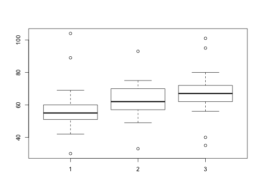

Data for Example 10.7
Engineer
A data frame with 51 observations on the following two variables.
A, B, and CKitchens, L. J. (2003) Basic Statistics and Data Analysis. Duxbury
str(Engineer)#> 'data.frame': 51 obs. of 2 variables: #> $ salary : int 30 42 46 50 51 51 54 54 55 56 ... #> $ university: Factor w/ 3 levels "A","B","C": 1 1 1 1 1 1 1 1 1 1 ... #>boxplot(salary ~ university, data = Engineer)kruskal.test(salary ~ university, data = Engineer)#> #> Kruskal-Wallis rank sum test #> #> data: salary by university #> Kruskal-Wallis chi-squared = 6.3994, df = 2, p-value = 0.04077 #> #>anova(lm(salary ~ university, data = Engineer))#> Analysis of Variance Table #> #> Response: salary #> Df Sum Sq Mean Sq F value Pr(>F) #> university 2 735.2 367.61 1.5272 0.2275 #> Residuals 48 11553.8 240.70 #>anova(lm(rank(salary) ~ university, data = Engineer))#> Analysis of Variance Table #> #> Response: rank(salary) #> Df Sum Sq Mean Sq F value Pr(>F) #> university 2 1412.7 706.34 3.5226 0.03737 * #> Residuals 48 9624.8 200.52 #> --- #> Signif. codes: 0 ‘***’ 0.001 ‘**’ 0.01 ‘*’ 0.05 ‘.’ 0.1 ‘ ’ 1 #>